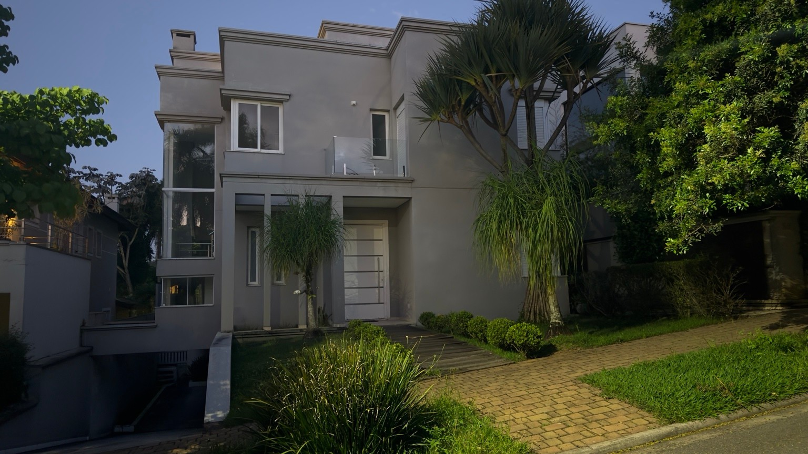

Serviços, decisões, materiais e registros no mesmo lugar. Um caderno de consulta para acompanhar a preparação da obra.
Etapa 1 · Rooftop em planejamento. Início e contratação a confirmar. Carregando os registros…
FIG. 01 / UM NOVO OLHAROBSERVAR · RECONSTRUIR · TRANSFORMAR
Antes de transformar, entender a casa. Cada nível. Cada passagem. Cada possibilidade.
UMA BASE COMUM PARA AS PRÓXIMAS DECISÕES
As plantas guardam a origem. As fotografias mostram o presente. O modelo reúne os espaços, deixando claro o que sabemos e o que ainda precisa ser medido.
FACHADA / ESTUDO DE VERSÕESMATERIAIS · CORES · PAISAGISMO
Uma casa. Diferentes possibilidades.
Treze estudos visuais reunidos para comparar a evolução da fachada: das primeiras propostas toscanas às paletas de cor e ao detalhe de pedra moledo.
Todas as imagens desta coleção são simulações por IA, não fotografias da obra nem projeto executivo. O estudo mais recente não é uma aprovação final. As versões anteriores permanecem como histórico, inclusive as alternativas com plantas no rooftop, retiradas da direção mais recente. Para conferir o existente, consulte as fotografias reais.
13 / ESTUDO MAIS RECENTE
Areia branca. Pedra moledo.
Uma base quase branca, pedra clara pontual na entrada e colunas lisas. O verde permanece na fachada e no jardim; o rooftop volta a ficar sem plantas.
Escolha duas versões para comparar cores, materiais e paisagismo. No celular, elas aparecem uma abaixo da outra. Os estudos podem conter variações de interpretação; não são uma comparação métrica.
FIG. 02 / PERCURSOSQUATRO NÍVEIS / UMA CASA
Do chão ao horizonte.
Escolha um percurso. Entre no modelo para explorar.

01 / CHEGARFOTOGRAFIA EXISTENTE
FIG. 03 / MODELO 3D
A casa se revela. Um andar de cada vez.
Gire, aproxime e isole cada nível. Em Terreno / exteriores, veja também piscina, rampa e jardim. A fachada contínua é recortada apenas na visualização: o arquivo integrado preserva sua geometria única.
Carregando o modelo 3D…
Ocre = hipótese fotográfica, não levantamento medido.
Reconstrução para conferência visual. Não substitui levantamento de campo, projeto executivo ou avaliação estrutural.
FIG. 04 / ATELIÊ DIGITAL
Da linha ao espaço.
Plantas vetoriais por pavimento, PDF para conferência e CAD editável. DWG consolidado para a arquiteta, DXF editável e PDFs exportados dos mesmos traçados.
Carregando arquivos atuais…
FIG. 05 / ARQUIVO DE ORIGEM
O desenho de origem. Separado por pavimento.
Fotografias das plantas fornecidas, organizadas por nível e tipo. Abra para ampliar e comparar com a reconstrução. Identificadores pessoais foram ocultados nas cópias públicas; traçados e cotas foram preservados.
FIG. 06 / REGISTROS DA CASA
A casa, sem interpretação.
Registros reais selecionados da fachada e do rooftop. As fotografias mostram o estado existente; não certificam dimensões nem elementos ocultos.
FIG. 07 / CADERNO DE DECISÕES
Precisão também é dizer o que falta.
As decisões registradas orientam a reconstrução. Medidas inferidas e questões não resolvidas permanecem explícitas.
Decisões incorporadas
Escada principal começa à direita e chega pela esquerda.
Portas das varandas de correr e guarda-corpos de vidro.
Circulação reta, com guarda-corpo contínuo.
Depósito em L e teto inclinado acompanhando a escada até o fim.
Quatro colunas no alinhamento do jardim.
R01 mantém aproximadamente 3,30 m de largura. R02 tem cerca de 2 m de largura, com profundidades de 2,50 m e 1,50 m, sem ultrapassar o limite externo da cobertura.
Piscina no nível térreo, com grama sintética ao redor, rampa de garagem e jardim frontal.
Faixas de parede acima e abaixo das janelas preservadas.
Sem falsa certeza
Rooftop alterado depois da planta histórica: volumes fotográficos aproximados e identificados separadamente. A platibanda segue a referência histórica; altura e extensão atuais não foram medidas.
Posição do duto da lareira ainda não confirmada. Nenhum volume foi inventado sob a escada.
Acesso lateral da garagem à piscina representado conforme referências disponíveis; trechos inferidos e área técnica exigem conferência em campo.
Espessuras, níveis e medidas inferidas devem ser conferidos em campo antes de execução.
ESTUDO EM ABERTO / ACESSIBILIDADE
Conectar os quatro níveis.
Elevador residencial: conferir percurso, caixa, estrutura e medidas em campo antes de selecionar uma solução. Nenhum fornecedor ou instalação aprovado.
RooftopParada em estudo
SuperiorParada em estudo
TérreoParada em estudo
GaragemParada em estudo
Esquema de intenção, sem posição ou escala.
FIG. 08 / PLANO DE TRANSFORMAÇÃOPRIORIDADES + DEPENDÊNCIAS
Primeiro, proteger. Depois, transformar.
Nove frentes, na ordem de prioridade desejada. A ordem de obra depende do diagnóstico e dos projetos: uma prioridade não elimina as etapas técnicas que vêm antes.
01
PRIORIDADE PRINCIPAL
Rooftop.
Resolver a infiltração para preparar um novo lugar de estar.
Identificar os pontos de infiltração, drenagem e condições existentes com responsável técnico.
B / COMPATIBILIZAR
Proteção + infraestrutura
Definir sistema de manta, regularização, caimentos e tubulações embutidas, mantendo acessos para manutenção. A sequência das camadas será definida em projeto.
C / CONCLUIR
Piso + acabamento
Após verificação da impermeabilização, finalizar o piso e os acabamentos. A direção visual mais recente retira as plantas do rooftop; os estudos com jardineiras ficam preservados como histórico, não como decisão de execução.
02
Fachada
Jardim, pintura, iluminação e desenho do conjunto.
ANTES DE EXECUTARDefinir linguagem, materiais e iluminação antes dos acabamentos.
03
Casa de máquinas
Tratar a infiltração e recuperar o forro.
ANTES DE EXECUTARDiagnosticar a origem e resolver a umidade antes de recompor o acabamento.
04
Porta da sauna
Substituir a porta existente.
ANTES DE EXECUTARConferir vão, ferragens e especificação adequada às condições da sauna.
05
Projeto arquitetônico
Consolidar levantamento, layout, materiais e compatibilização.
ANTES DE EXECUTARBase técnica antecipada para as intervenções que dependem de projeto.
06
Elevador
Estudar viabilidade, percurso e custo de implantação.
ANTES DE EXECUTARConferir estrutura, espaço, instalações e propostas. Sem orçamento definido.
07
Dormitório principal
Desenvolver o novo plano do ambiente.
ANTES DE EXECUTARDepende do projeto arquitetônico (05). Layout ainda a definir.
08
Cozinha ampliada
Estudar abertura de paredes e integração dos espaços.
ANTES DE EXECUTARDepende do projeto (05), avaliação estrutural e compatibilização das instalações. Nenhuma remoção autorizada.
09
Piscina com prainha
Explorar uma área rasa integrada à piscina.
ANTES DE EXECUTARConceito a desenvolver no projeto (05), com verificação de estrutura, impermeabilização e hidráulica.
FIG. 09 / CONTINUIDADEDA CONFERÊNCIA À TRANSFORMAÇÃO
O próximo capítulo.
Uma base para olhar, discutir e decidir. O projeto continua a partir daqui.